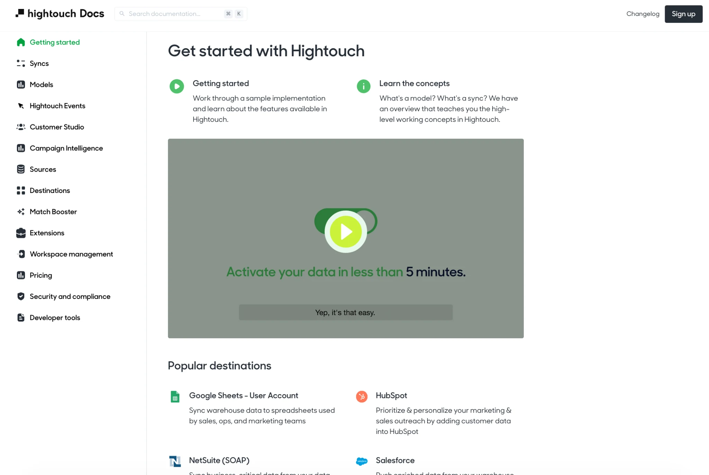
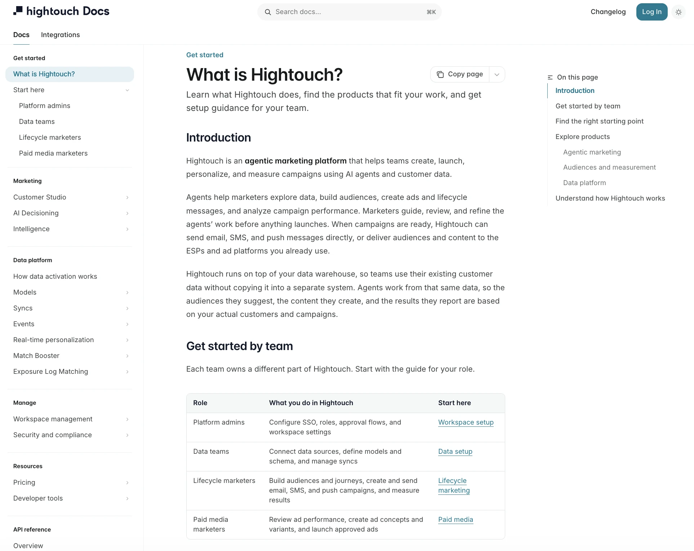

01.
Modernizing Hightouch's Documentation Platform
Reframed a CDP-era documentation experience for an expanding agentic marketing platform while leading the move to Mintlify.
Substantially reduced vendor costs; launched ahead of plan.
Read case study
